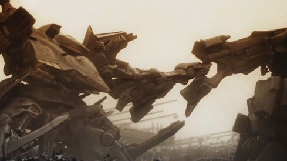
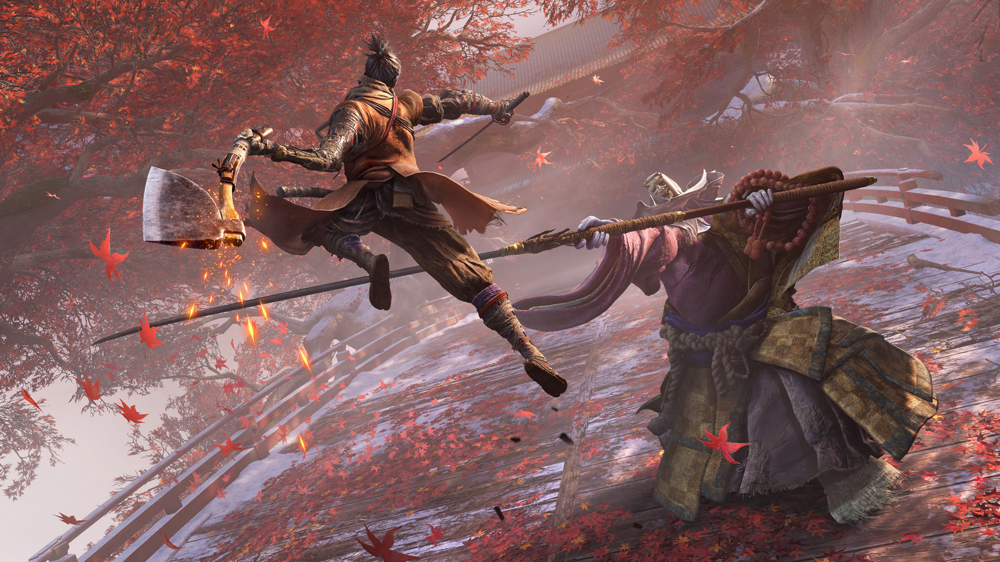

INTRO
宮崎英高とは、日本のゲームクリエイター、およびフロムソフトウェアの代表取締役社長。
ゲームクリエイターとしては主にダークファンタジーを主眼に置いたRPGを制作することが多く、フロムソフトウェアの顔とも言えるゲームを多数制作している。
WORKS
|  |  | |
| ダークソウルシリーズ | アーマードコアシリーズ | SEKIRO |
|---|
AMUSE
宮崎氏の創る世界観を体験してもらえるような、親子で楽しめるアミューズメントを展示中!
詳しくは下の『MORE』をクリック!!